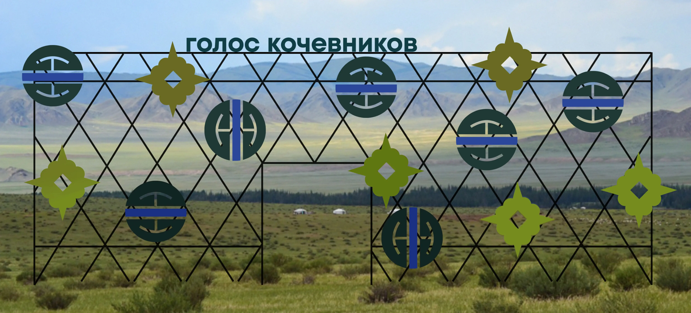
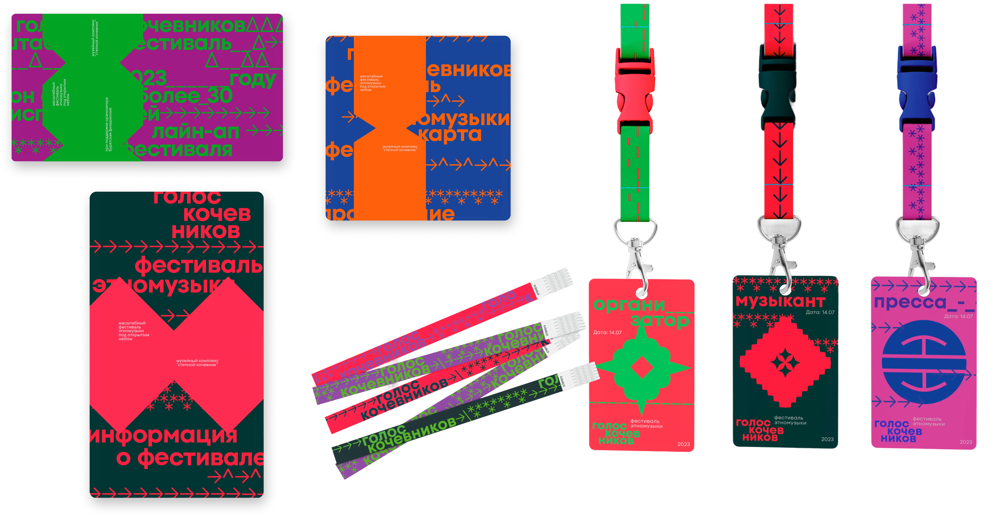
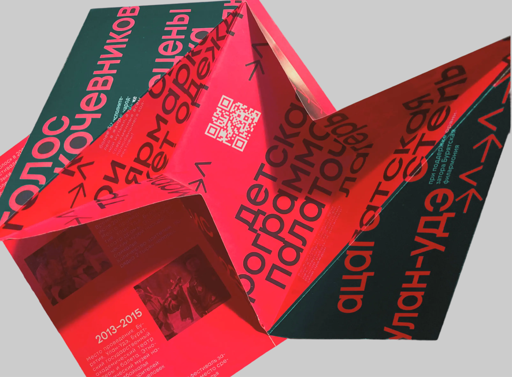
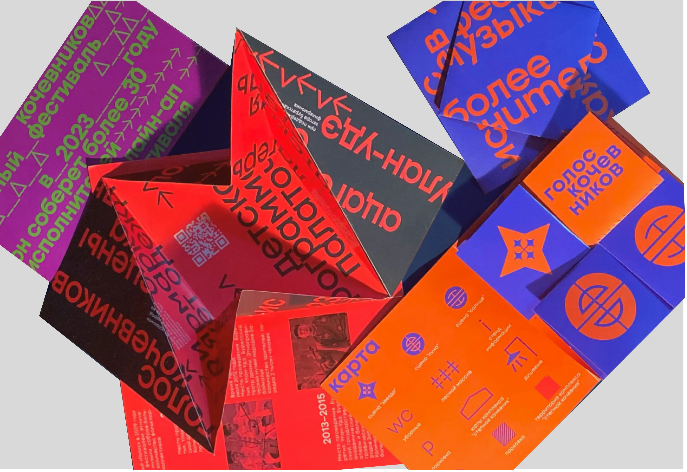
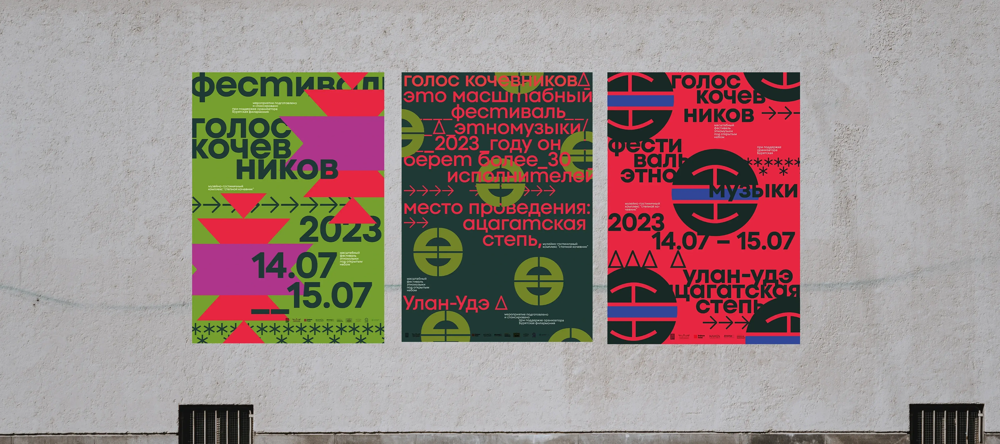
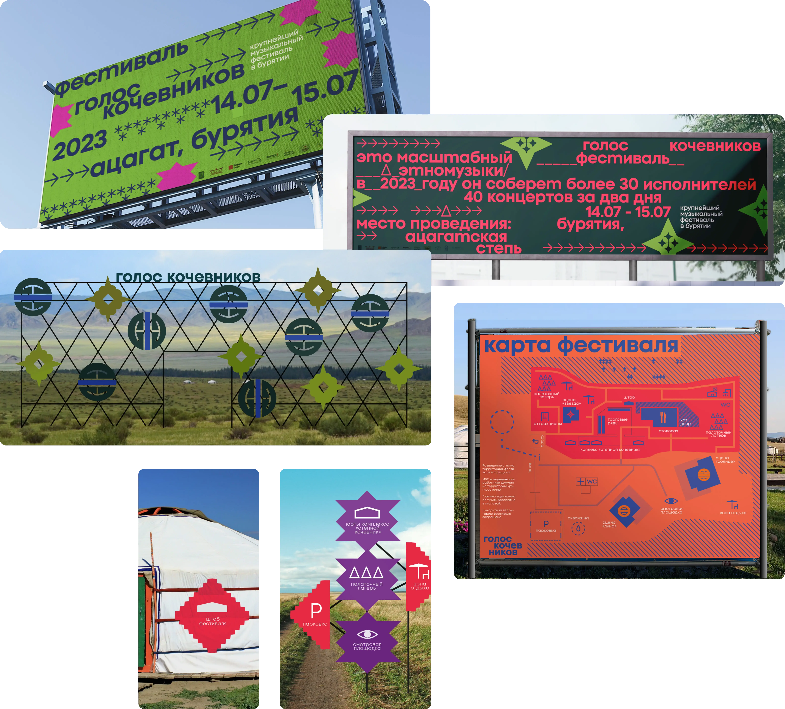
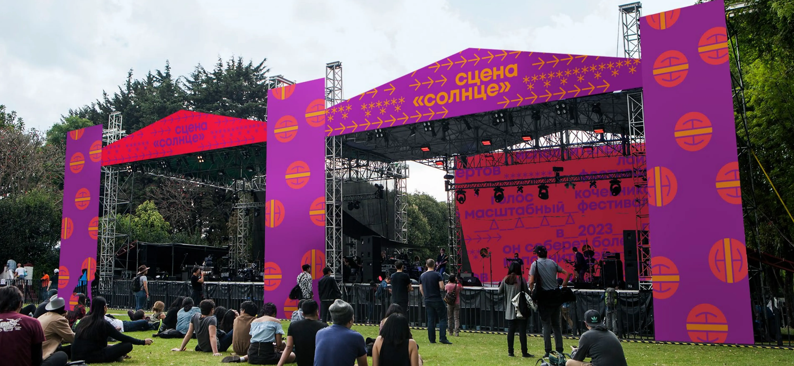
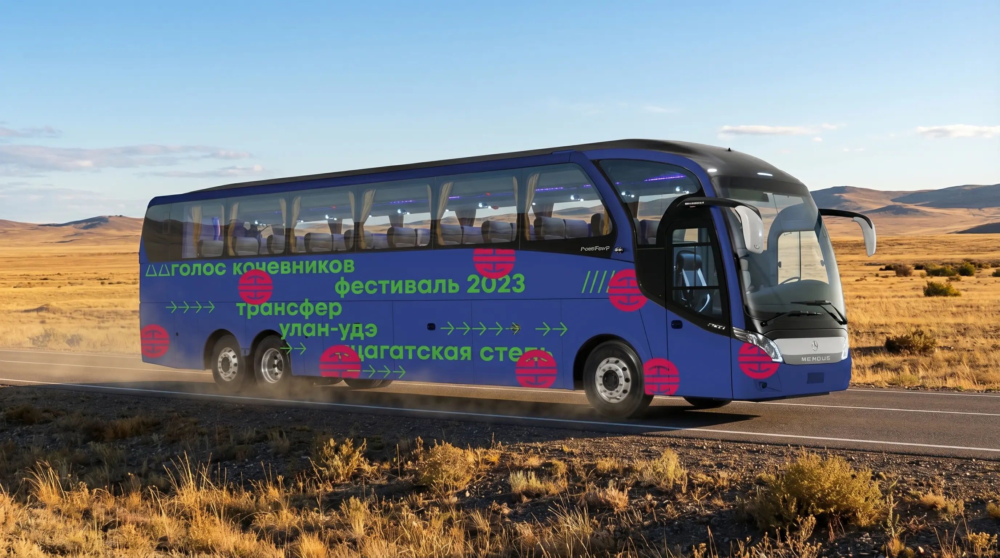
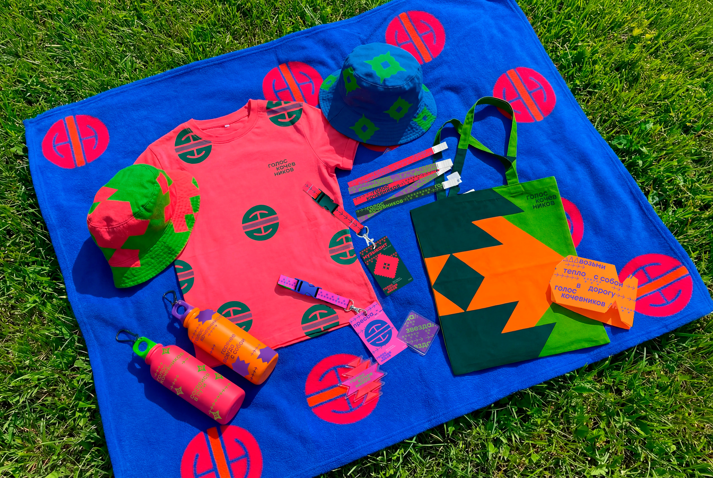

Айдентика фестиваля
«Голос кочевников»
ΔΔ
ΔΔΔΔ


ΔΔΔ
→→→Международный фестиваль
в формате этномузыки
Проходит ежегодно летом
в Ацагатской степи →→→→→→→→
в формате этномузыки
Проходит ежегодно летом
в Ацагатской степи →→→→→→→→

Полиграфия: рекламные и навигационные буклеты,
постеры бейджи, браслеты




Широкий формат: Билборды, фестивальные
конструкции, навигация, транспорт



Мерч: футболки, шопперы, панамки,
пледы, значки, бутылки
